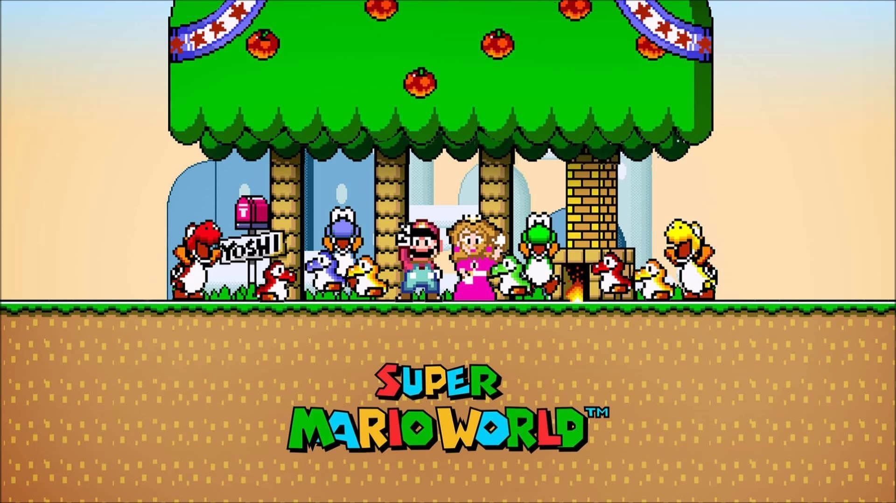
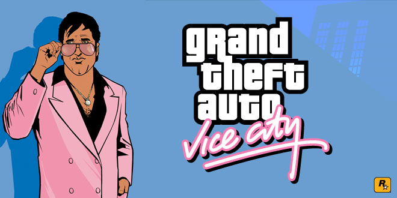

| PÁGINA PRINCIPAL | MIS GUSTOS | MIS GUSTOS FUTBOLÍSTICOS |
COSAS ACERCA DE MÍ |
| Yo nací el 26 de enero del 2006, actualmente tengo 17 años, me gusta la pizza, el fútbol y jugar videojuegos, mis videojuegos favoritos son: 1. The Legend of Zelda Ocarina of Time. Este juego lo probé desde que tenía 9 años y me encantó por su historia y por su jugabilidad que es muy frenética y un tiempo de juego largo. 2. Minecraft Este es mi juego favorito por mucho porque me ha dado muchas horas de entretenimiento por sus incontables cosas que se pueden hacer en solitario y en amigos. 3. GTA SAN ANDREAS El Grand Theft Auto San Andreas es uno de los mejores juegos que he jugado por su gran historia que te hace encariñarte con los personajes, su gran mundo abierto, sus grandes mecánicas, easter eggs, etc lo convierten en un juego legendario y como olvidar su increíble banda sonora 4. Super Mario World  Este juego es uno de los mejores juegos del SNES y uno de los más divertidos de la categoría plataformas, un clásico de Nintendo y uno de los mejore juegos de la historia. 5. GTA Vice City  Este GTA es uno de mis favoritos por su escencia de los 80's con su increíble banda sonora y también con el San Andreas su historia es muy interesante. |
Soy una persona tranquila que le gusta bromear con mis amigos, vivo con mis padres, vivo en Comayagua Honduras, un sueño que he tenido desde niño ha sido convertirme en un futbolista profesional o conocer algún día a alguno de mis ídolos. Actualmente no sé muy bien que carrera voy a elegir para mi futuro pero en un día de estos me pondré a investigar qué carreras hay para elegir alguna que me guste, me gustaría viajar algún día en otro país y vivir allí. Mi pasatiempo favorito es practicar fútbol, escuchar música y platicar tanto con mi familia como con mis amigos |